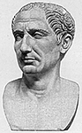

 After defeating the Romans at the Battle of Lake Trasimene, Hannibal now moved his forces down south. There was panic in Rome and Quintus Fabius Maximus was appointed dictator to deal with Hannibal. Fabius, however, refused to meet Hannibal in the open field and this strategy became highly unpopular in Rome. Romans were used to attacking, not hiding. The Romans were forced to go on the offensive after Hannibal positioned his forces betweeen Rome and it's vital grain supply. This setup the epic Battle of Cannae. Here Hannibal defeated the Romans inflicting the worst single day defeat in Rome's history. After defeating the Romans at the Battle of Lake Trasimene, Hannibal now moved his forces down south. There was panic in Rome and Quintus Fabius Maximus was appointed dictator to deal with Hannibal. Fabius, however, refused to meet Hannibal in the open field and this strategy became highly unpopular in Rome. Romans were used to attacking, not hiding. The Romans were forced to go on the offensive after Hannibal positioned his forces betweeen Rome and it's vital grain supply. This setup the epic Battle of Cannae. Here Hannibal defeated the Romans inflicting the worst single day defeat in Rome's history.